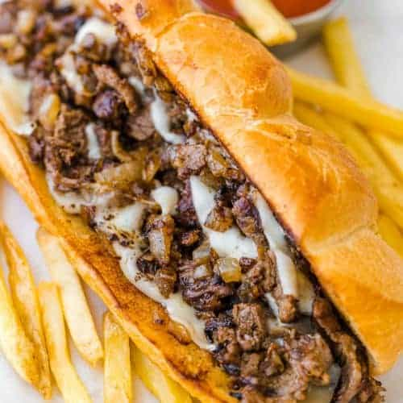

Steak Sub Recipe

Description
A Pete Cy's classic sub smothered in Boss Sauce & Swiss American Cheese.
Try one for yourself today!
Ingredients
2.5 lbs of Shaved Sorlein Steak
1 pk 12 count Costanzo Sub Roll
1 lb of Swiss American Cheese
1 jar of Mild or Hot Boss Sauce
Steps
- Heat skillet to medium high
- Chop steak meat on the hot skillet
- Once cooked, apply Boss Sauce & cheese on top of the steak
- Toast roll in the oven for ~5 minutes
- Put meat on the roll, with mayonaisse
- Finally, ENJOY!